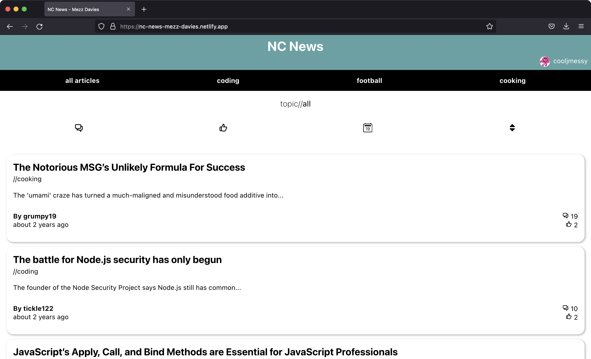
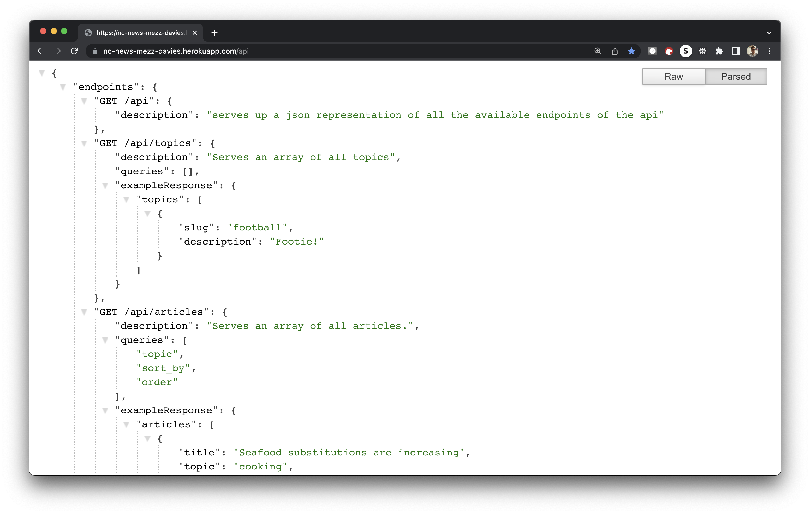

projects...
NC News - Frontend

NC News is a front end web application in a style similar to reddit
where users are able to view articles and vote on them (up or down)
as well as view, post and delete related comments. The hosted
version can be found by clicking on the above image. It was made as
part of my time on the Northcoders Bootcamp (whose curriculum can be
found
here).
The app fetches and writes its data via an API that I also made on
the same bootcamp - see below for details. Although there is no
authentication implemented, you are "logged in" as a user and as
such some functionality of the website works accordingly e.g you are
only able to delete comments associated with that user.
Please have a click around the website and add a comment to an
article, vote on an article etc. The web app is built with React and
was my first time styling with CSS and has kick-started my keen
interest in front end development.
NC News - Backend

This is the backend API project for the above web app. It is a
restful server made with Express.js that connects to (and serves
data from) a Postgres (aka PostgreSQL) database. It was created
using TDD with Jest. A full list of the available end points is
available (in .JSON format) by clicking on the above image.
Although kind of magical getting it all up and running, making this
API was challenging - I had to make a mind map to help me get my
head around all the moving parts involved. You can view the
outpourings of my brain
here
if you are so inclined!
Planet Scran It
The final project from my time on the bootcamp was a group project.
We created a meal planning app with React Native. As well as being
responsible for the core app idea I was primarily involved in the
development of front end of the app. I was also exposed to Firebase
though - something I plan to learn more about soon. The above 5
minute video (3 mins 20 secs if watched on 1.5 speed!) explains the
app and our process in more detail and was used as our presentation
video on graduation day.
about...
Hello and thanks for looking at my portfolio site. As alluded to above
I am a graduate of the Northcoders Full Stack Coding Bootcamp. Before
enrolling on the bootcamp I had spent the main chunk of my working
life involved in photography and video production in one way or
another. But over time I realised I wanted a change. I have always
been interested in technology and creativity so web development seemed
an ideal new career direction. Subsequently I learned of the phrase
"full stack" and so enrolled on a course that covered this to get a
full understanding of what coding entailed.
And so I have learned about so more than web development in my time on
the bootcamp. I learned fundamental javascript and coding concepts
including data structures, asynchronous tasks, functional programming
and OOP along with a good mix of Node packages. I also practiced Git
version control, pair programming, Agile working and best coding
practises. Subsequently, by the end of the course, I had gone from
very little coding experience to building and hosting a test-driven
developed back end REST API with a complimentary front-end web app as
well as a phone app. It was quite an intense journey!
Despite really, really enjoying getting a full stack education I still
feel my main interests and strengths are in front end development. As
I see it though there is always a grey area between the front and back
ends so having experience and understanding of both will always be of
use and interest.
Away from computers I enjoy exploring the outdoors (usually either
walking or cycling), cooking and spending time with my wife, friends
and family. I like watching football and am a season ticket holder at
Leeds United. I also enjoy experimenting with electronic music
production (oh that's not away from the computer). Scuba diving and
snorkelling are strong but infrequently indulged passions too.
Please do get in touch if you think we could work together - ideally I
am looking for a junior front end developer role.